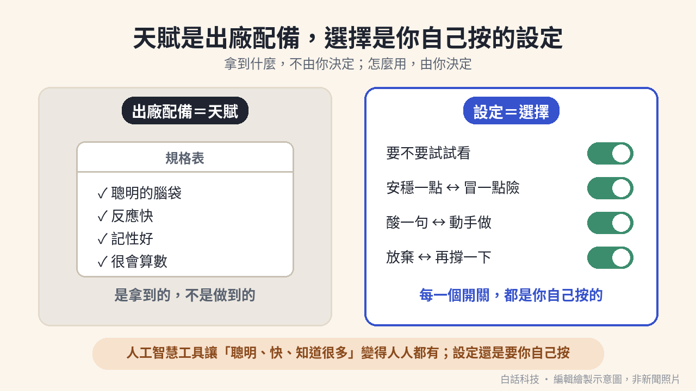
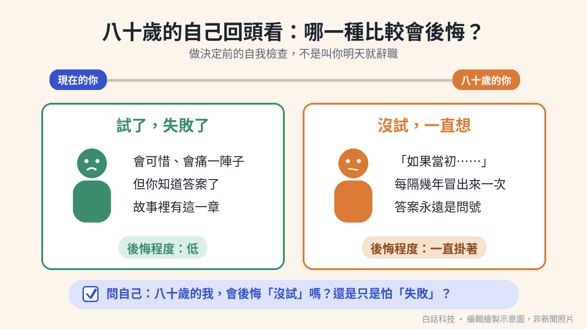
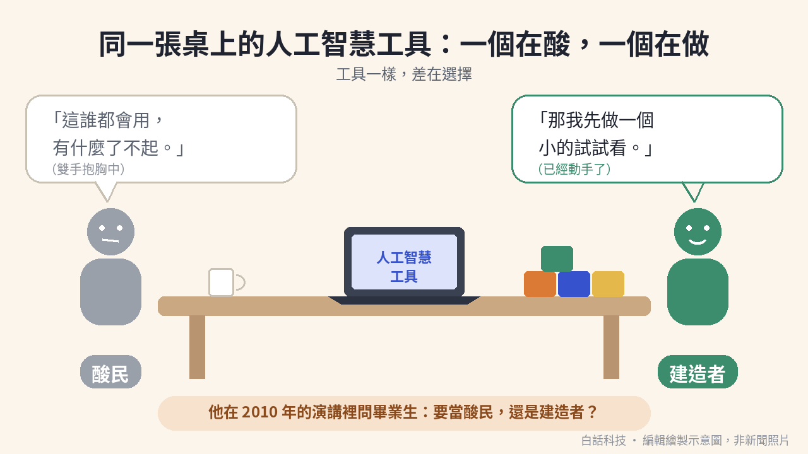

以前，「很會查、很會寫、算得快」是職場上的超能力。現在打開一個對話框，實習生和主管拿到的是同一套超能力。如果大家的出廠配備都被人工智慧補齊了，還有什麼是值得你自己驕傲的？
閱讀說明：本文引用的是傑夫·貝佐斯（Jeff Bezos）在不同年份、不同場合的原話（英文短句附中文大意），每句都標明原始場次；普林斯頓大學演講中的故事依官方公布的講稿轉述；把這些話接到人工智慧時代，是本站編輯的論點，不是他本人說的。
2010 年 5 月 30 日，傑夫·貝佐斯（Jeff Bezos）在普林斯頓大學（Princeton University）的 Baccalaureate 典禮演講，題目是 We are What We Choose。普林斯頓大學新聞稿寫，這是跨宗教的禮拜儀式，也是該校最古老的傳統之一。它是畢業週給應屆畢業生的祝福典禮，不是畢業典禮本身。
演講前段，他講了一個十歲時的故事。依普林斯頓大學官方公布的講稿轉述：他跟祖父母旅行，算出祖母抽菸可能少活幾年，得意地說出來，祖母卻哭了。祖父停車後溫和地告訴他，有一天他會明白，善良比聰明更難。這段見普林斯頓大學官方影片約 06:27–10:58。影片口語措辭與官方講稿略有不同，所以這裡只轉述，不加引號。
他接著對畢業生說：「Cleverness is a gift, kindness is a choice.」中文大意是：聰明是天賦，善良是選擇。這句與官方講稿逐字相符，約在 10:53。
他對台下畢業生說，他們都很聰明，能錄取就是證據。他也說，人類還會擁有很多新能力。這兩句依官方講稿轉述，不是逐字引用。錄取證明的是拿到的那一部分。他真正問下去的，是你準備拿什麼來驕傲。
原句是：「And will you take pride in your gifts or pride in your choices?」中文大意是：你要以天賦為傲，還是以選擇為傲？約在 12:53。
聰明可以是別人給的。要不要善良、要不要動手、要往哪裡走，才是自己的。下一節把這個區分接到今天。那個接法是本站的，不是他當天的講題。
這一段是本站編輯的論點。2010 年的演講沒有談人工智慧工具。寫作、查資料、算數、摘要，這些以前靠天賦與長期訓練才顯得突出的能力，現在很多人都能用人工智慧工具拿到接近的結果。實習生和主管若打開同一個對話框，起點會比以前靠近。
變便宜之後還留在你這邊的，是選擇：挑哪個問題、要不要試、做到哪裡算完成、結果誰負責、對人是否厚道。工具可以把草稿交出來。要交哪一版、要不要為那一版負責，仍然要有人按下去。
出廠配備是車子離開工廠時已經裝好的：引擎、煞車、音響。設定是你坐進駕駛座之後自己按的：目的地、要不要超車、遇人時先讓還是按喇叭。人工智慧補齊的是出廠配備那一格。方向盤還在你手上。下面這張圖就是這個對照。

插圖：白話科技編輯繪製／AI 輔助，非新聞照片
先寫查得到的事實，再寫他自己在演講裡的版本。本文不是亞馬遜（Amazon）的宣傳，本站與其沒有合作。
1986 年，他畢業於普林斯頓大學。普林斯頓大學新聞稿稱他為 1986 年的校友。大英百科全書（Britannica）寫，他在 1986 年以最優等成績畢業，主修電機工程與電腦科學。
1990 年，他進入紐約市的投資公司 D. E. Shaw，很快升任資深副總裁。大英百科全書與 Academy of Achievement 人物介紹都寫到這個職位。演講裡說的紐約市一家金融公司，對應的就是這家。這個對應是依這兩份人物介紹，演講本身沒有點名公司。
1994 年，他離開 D. E. Shaw，搬到西雅圖一帶，開一家網路書店。大英百科全書的寫法是：1994 年他和妻子離開 D. E. Shaw，搬到華盛頓州西雅圖，去開一家網路書店。Academy of Achievement 的人物介紹寫：雇主不準備做這件事，他知道只能自己創業，這代表放棄在紐約市的穩定職位。
亞馬遜官方網站寫：他在 1994 年於自家車庫創立公司；1995 年 7 月，Amazon.com 以網路書店的身分，從他在華盛頓州 Bellevue 的住家開張。官方頁沒有寫確切的成立日，本文也不寫。
下面是他自己的版本。
他說當時剛滿 30 歲、結婚一年。他告訴妻子，想辭職去做一件多半不會成功的瘋狂事，她說去做吧。見官方影片約 13:25–13:50。
他小時候是車庫發明家，一直想當發明家。妻子支持他追隨熱情。見約 13:53–14:18。
他在紐約市一家金融公司工作，向很欣賞的上司提出要創立網路書店。上司帶他在中央公園散步很久，聽完後說這是好主意，但更適合還沒有好工作的人，並請他想 48 小時再決定。見約 14:19–14:55。
以上依普林斯頓大學官方公布的講稿轉述；影片口語措辭與官方講稿略有不同。
48 小時之後，他這樣說自己怎麼落下決定：「I didn't think I'd regret trying and failing.」中文大意是：他不覺得自己會後悔試了但失敗。句子約在 15:15。
緊接的下一句，本文只寫中文大意，不引英文：他懷疑，「完全不試」這個決定會一直糾纏他。約在 15:20。
再往下仍只寫中文大意：考慮很久之後，他選了比較不安全的那條路去追自己熱愛的事，並以這個選擇為傲。約在 15:29。這句較長，本文不附英文。
這一節是編輯的整理，不是他為這個做法取過的名字。材料只有兩樣。一樣是上一節：他不覺得會後悔試了而失敗，卻懷疑完全不試會一直糾纏他。另一樣是演講結尾的預言，依官方講稿轉述：到了八十歲，安靜回想、只講給自己聽的人生故事裡，最精簡也最有意義的版本，會是你做過的一連串選擇。第 4 頁會再把這段對上結尾原句。
放在一起，變成做決定前的兩欄。試了、失敗了：會可惜，會痛一陣子，但你知道答案了，故事裡有這一章。沒試、一直想：「如果當初」隔幾年冒出來一次，答案一直是問號。
問自己的句子可以很短：八十歲回頭看，會後悔沒試嗎？還是其實只是怕失敗？它幫你分辨「怕失敗」和「真的不想要」。它不是叫人辭職，也不是叫人承擔承受不起的風險。先把最壞情況限制在自己承受得起的範圍，例如用時間盒、做一輪小規模試驗。這套建議的邊界，第 5 頁寫全。

插圖：白話科技編輯繪製／AI 輔助，非新聞照片
2010 年那場演講的結尾，是一連串「你要……還是……」。約十題裡，本文只寫三題的中文大意，英文只留兩句。
只寫中文、不引英文的一題：你要讓慣性帶著走，還是追隨熱情？
英文的第一句：「Will you play it safe, or will you be a little bit swashbuckling?」中文大意是：你要穩穩地走，還是帶一點闖蕩的膽子？約在 16:41。
英文的第二句：「Will you be a cynic, or will you be a builder?」中文大意是：你要當酸民，還是當建造者？約在 16:56。這兩句都在官方影片約 15:44–17:18 那一段。
這一段是本站編輯的論點。他把問題丟給 2010 年的畢業生。今天很多團隊的桌上，已經放著同一套人工智慧工具。差別不太在誰打得開，而在打開之後做什麼。
酸民模式是說「這誰都會用」「反正會出錯」，然後停在那裡。建造者模式是做一個小試驗，把結果拿出來看，好壞都算數。建造者也會批評。差別是批評之後有沒有動手驗證：步驟寫得出來，別人照著能再跑一次，結果好或壞都留在紀錄上。

插圖：白話科技編輯繪製／AI 輔助，非新聞照片
動手，也不等於去追這週最響的題目。2001 年 5 月 4 日，Academy of Achievement 的訪談（2001 Achievement Summit，American Academy of Achievement）裡，他說：「Do something you’re very passionate about, and don’t try to chase what is kind of the ‘hot passion’ of the day.」中文大意是：做你真正熱愛的事，不要去追當下最熱門的那股熱潮。約在 38:51–39:03。上下文是他在談網路熱潮高峰時的情況。這句與官方逐字稿相符。訪問者姓名該頁未載明。
接到今天，仍是編輯的延伸：不要只因為某個人工智慧題目是這週最熱門的就去做。選你真的在乎、願意長期投入的問題。熱潮會換標題。你願意連續做完一個小試驗的題目，比較不會。
2017 年 5 月 20 日，西雅圖 The Museum of Flight「Apollo」展覽開幕，他接受學生問答。學生問怎麼面對逆境。他舉的例子，本文用中文轉述：數學好是天賦；把數學練到下一步很辛苦，那是選擇。
接著這句依原始影片自動字幕整理：「be proud not of your gifts but of your hard work and your choices」。中文大意是：不要以天賦為傲，要以努力和選擇為傲。約在 20:25，前後段落是 20:18–21:19。這場是 GeekWire 的現場錄影，不是主辦單位的官方逐字稿，沒有官方逐字稿可對。GeekWire 報導記錄了同一場。
2017 年 11 月 4 日，在洛杉磯舉行的 Summit 大會（活動名 Summit LA17），他與胞弟 Mark Bezos 對談。依原始影片自動字幕整理，他說：「we all get to choose our life stories and it's the choices that define us not our gifts」。中文大意是：每個人都能選擇自己的人生故事，定義我們的是選擇，不是天賦。約在 44:27，前後是 44:25–45:15。同樣沒有官方逐字稿。活動頁見 Summit。
回到 2010 年演講結尾。依普林斯頓大學官方講稿轉述：他預言，到了八十歲，安靜回想、只講給自己聽的人生故事裡，最精簡也最有意義的版本，會是你做過的一連串選擇。見約 17:04–17:50。第 2 頁的八十歲檢查，用的就是這段，加上他不覺得會後悔試了而失敗的說法。
轉述之後的原句是：「In the end, we are our choices.」中文大意是：到頭來，我們就是自己的選擇。約在 17:47。普林斯頓大學新聞稿也引用了這句。
接到今天，這是本站的論點：在人工智慧時代，「選擇」可以很具體。選題目。選擇驗證，而不是直接相信。選擇為結果負責。選擇不拿聰明去壓別人。天賦那一格變便宜之後，這四件仍要有人做。
1. 倖存者偏差。這是一位押注成功的人回頭講的故事。很多選了比較不安全的路而失敗的人，不會被請去畢業典禮演講。成功不能反證選擇一定對。
2. 他有安全網。依他自己的講述，當時他有一份好工作、欣賞他的上司、支持他的妻子，又有普林斯頓大學學歷。失敗的代價相對有限。選比較不安全的路，不是給每個人的建議：有債務、要照顧家人、身分或健康限制的人，失敗成本完全不同。本文的行動建議因此都是小規模、有時間上限的試驗，不是辭職。
3. 不同年份、不同場合。引句來自 2001 年訪談、2010 年畢業週演講、2017 年學生問答與 2017 年兄弟對談，聽眾與上下文都不同。把它們放在同一條論證裡，是本站的編排。網路上流傳的剪輯版本常把這些話重新排序、剪在一起，本文一律回到原始場次。
4. 講稿與口語有差異；部分只有自動字幕。普林斯頓大學官方講稿標示為 as delivered，但幾處措辭與影片口語不同，因此相關故事只轉述、不加引號。2017 年兩場只有平台自動字幕，沒有官方逐字稿，引句可能有辨識誤差。
5. 人工智慧的連結是編輯論點。他在這些場合沒有談人工智慧工具。本文把天賦與選擇接到人工智慧時代，是本站的延伸。本文不評論亞馬遜的經營或他的財富，也不提供職涯或投資建議。
1. 2010 年普林斯頓大學演講的主軸：聰明是天賦，善良與其他選擇是自己的。他問畢業生要以天賦為傲，還是以選擇為傲。
2. 1994 年他離開 D. E. Shaw 去做網路書店。他說自己不覺得會後悔試了而失敗，卻懷疑完全不試會一直糾纏他。
3. 2001 年他提醒做真正熱愛的事，不要追當下最熱門的熱潮。2017 年他兩度重複，以選擇為傲，而不是以天賦為傲。
4. 本站論點：人工智慧讓「聰明、快、知道很多」變便宜，值得驕傲的部分移到選擇：試什麼、做什麼、當酸民或建造者、怎麼對人。
5. 這是成功者的回顧，他有安全網。八十歲檢查適合用在限制了最壞情況的小試驗上。
以下是編輯根據本文延伸的實務建議，不是講者原話，也不是已驗證的研究結論。
把「我選了什麼」寫進交付。人工智慧工具能寫出程式碼草稿，選哪個做法、放棄哪個仍是你的。在下一個拉取請求（pull request）描述裡加一段：考慮過的兩個做法、選了哪個、為什麼、哪裡還不確定。
用建造者的方式批評。下次想在群組裡批評某個新工具時，先花 30 分鐘做一個最小可重現的例子，把結果（好或壞）連同步驟貼出來，讓別人能照做驗證。
替「一直想試」的技術題目設時間盒與失敗標準。挑一個擱了很久的題目（新工具、重構、小專案），事先寫下兩小時的上限，以及怎樣算失敗，讓失敗也有答案。
從自己的清單挑一個「一直想試但沒試」的技術題目，寫下八十歲檢查的答案與失敗標準，用兩小時做完第一個小試驗。驗收：有一份短紀錄，寫明試了什麼、結果、下一步「繼續」或「停止」與理由，並分享給至少一位同事。沒有結論的紀錄不算完成。
以下是編輯根據本文延伸的實務建議，不是講者原話，也不是已驗證的研究結論。範圍停在你帶得動的團隊，不假設你能決定公司級投資。
稱讚選擇，不只稱讚聰明。一對一面談或回饋時，具體點出對方做的選擇：主動接下難題、先做小試驗、承認錯誤並修正。不要只說你好聰明。
給「試了失敗」一個安全出口。小試驗事先講好時間與範圍上限，結束後開 15 分鐘複盤，把失敗結果記成學到的事，不記成責任追究。
把酸話轉成試驗提案。會議上有人批評新工具時，接著問：如果要試，最小的試驗怎麼設計？並當場指定負責人與回報日期。
下次團隊會議收集一個「大家一直說要試、卻沒人試」的題目，指定一位負責人、兩小時上限與回報日期。驗收：回報日真的有回報，紀錄上寫明結果與「繼續」或「停止」的決定和理由。沒有回報或沒有結論，這個試驗就還沒完成。
A. 普林斯頓大學 2010 Baccalaureate 演講「We are What We Choose」。2010 年 5 月 30 日，普林斯頓大學，由校長 Shirley M. Tilghman 介紹。支撐本文的故事轉述與 P-A、P-B、P-C、P-C2、P-D、P-E、P-F、P-G。官方講稿：2010 Baccalaureate remarks。普林斯頓大學新聞稿：Choices shape lives, Bezos tells seniors。普林斯頓大學官方影片：youtube.com/watch?v=Duml1SHJqNE。本文用到的段落與時間碼：祖父的故事 06:27–10:58（轉述）；P-A 約 10:53；P-B 約 12:53；剛滿 30 歲與妻子支持 13:25–13:50（轉述）；車庫發明家 13:53–14:18（轉述）；上司與中央公園 14:19–14:55（轉述）；P-C、P-D 15:15–15:39；結尾問句 P-E、P-F 16:41、16:56；八十歲預言 17:04–17:50（轉述）；P-G 約 17:47。故事類段落依官方講稿轉述，影片口語措辭與官方講稿略有不同。時間碼依原始影片自動字幕對齊，可能有 1 到 2 秒誤差。
B. Academy of Achievement 訪談（2001 Achievement Summit）。2001 年 5 月 4 日，American Academy of Achievement。訪問者姓名未載明。支撐 A-1。影片：38:51–39:03。官方逐字稿：achievement.org/achiever/jeffrey-p-bezos/。
C. The Museum of Flight「Apollo」展覽開幕學生問答。2017 年 5 月 20 日，西雅圖。GeekWire 現場錄影，非主辦單位官方。支撐 M-1，依原始影片自動字幕整理。影片：20:18–21:19。GeekWire 報導：Jeff Bezos tells kids about vision, space, and practical tips for success。
D. Summit LA17：Jeff Bezos 與 Mark Bezos 對談。2017 年 11 月 4 日，洛杉磯。支撐 S-1，依原始影片自動字幕整理。Summit 官方影片：44:25–45:15。活動頁：Summit 活動頁。
E. 非演講事實查核。查核日期 2026 年 9 月 30 日。Britannica〈Jeff Bezos〉：1986 年普林斯頓大學畢業、主修電機工程與電腦科學；1990 年進 D. E. Shaw、升任資深副總裁；1994 年離職搬到西雅圖開網路書店。Academy of Achievement 人物介紹：在 D. E. Shaw 升任資深副總裁；雇主不準備做網路書店，他放棄紐約市的穩定職位自行創業。亞馬遜官方〈Amazon recreated the garage where Jeff Bezos started the company in 1994〉：1994 年在車庫創立；1995 年 7 月以網路書店從 Bellevue 住家開張。普林斯頓大學新聞稿：1986 年校友、Baccalaureate 為跨宗教禮拜與最古老傳統之一、演講日期。
F. 編輯判斷。把天賦與選擇接到人工智慧時代、八十歲檢查的整理方式、酸民與建造者在人工智慧工具前的對照、兩則 Takeaway，都是本站編輯觀點與延伸建議，不是他本人說法。本文未使用任何財富、市值、營收或市場數字。
內容整理、摘要並改寫自 Jeff Bezos 於普林斯頓大學 2010 年 Baccalaureate 演講（依官方公布講稿）與上列原始場次，非逐字紀錄；英文引句只取短句並附中文大意，標示「依原始影片自動字幕整理」者未經官方逐字稿核對。把他的話接到人工智慧時代的論點，以及文末兩則 Takeaway，為本站編輯觀點與延伸建議。查核日期 2026 年 9 月 30 日。